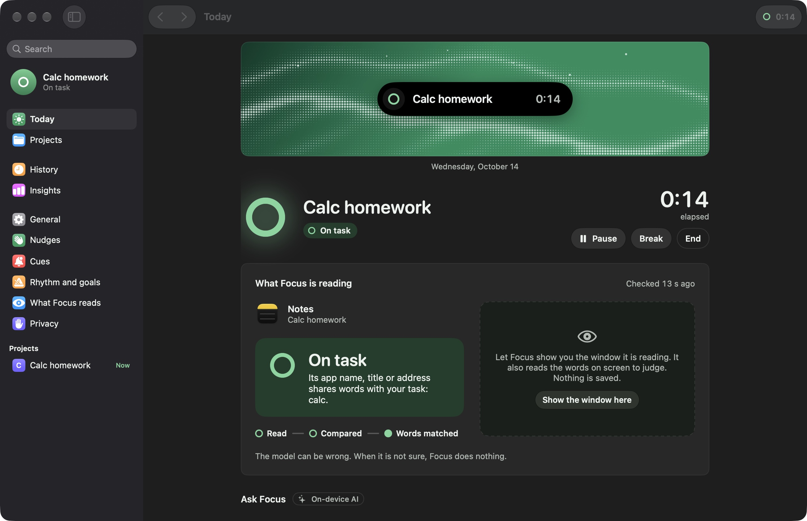
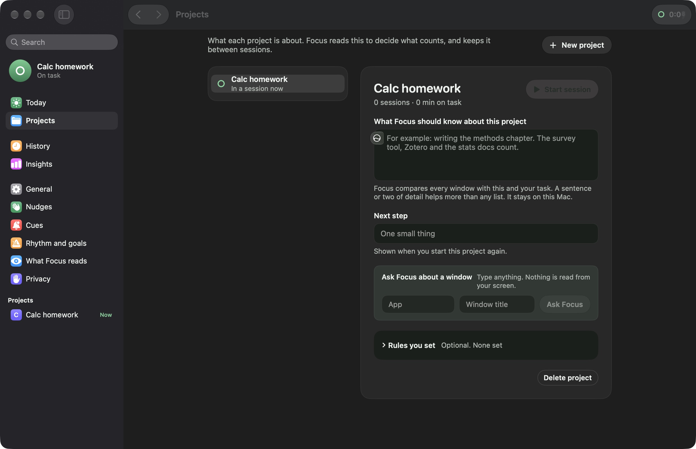

24:10
Never invisible
While Focus watches, a ring sits in the notch and the menu bar.
Made for Mac. Runs on your Mac.
Tell Focus what you are working on. An on-device AI compares the window in front with it, and nudges you softly when you wander.
No account. Nothing to sign up for.

A ring, your task and the time. It only opens when you have drifted for a while.
Focus read Notes, “Calc homework”. Shares words with your task. On task
The ring is closed. You are on task, so Focus says nothing.
Every call is shown to you. The model can be wrong, so Focus leans quiet.
While Focus watches, a ring sits in the notch and the menu bar.

A sentence about the work beats any list of rules.
Messaging, music and blank tabs are never read or judged.
Control, Option, F starts a session, or pauses one.
Drop files on the notch, drag them out when you need them.
See why each moment was flagged, and tell Focus when it got one wrong.
Off until you turn it on. Words stay in memory for seconds.
Runs on your Mac.
No account. No cloud.
The judge is Apple’s on-device model. There is nothing to sign up for and no analytics.
Never names
the distraction.
A nudge talks about your task, not where you went. Safe on a shared screen.
No sound.
No mascot.
Quiet by default. The better you are doing, the less you see.
Not sure?
It does nothing.
A nudge needs two checks that agree and a drift that lasts.
See and delete
what it learned.
Reasons live in memory. Sessions keep counts, never window text.
Screen reading
is opt-in.
Pictures never reach the model, and nothing is saved to disk.
Focus starts gentle. It notices when you wander and says so softly. Stricter steps are there if you ask for them.
Say what you are working on. Focus reads the window in front, compares, and stays quiet unless it is sure.
What will you finish today?
Early build
The app, window title and page address of the window in front, only during a session. If you turn on screen reading, it also reads the words in that window. The model sees words, never the picture.
Focus judges with Apple’s on-device model. There is no account, no cloud service of ours and no analytics. Pictures and screen words stay in memory and are dropped when the window changes.
It will, sometimes. That is why a nudge needs two checks that agree and a drift that lasts, and why not sure does nothing. In Review, “That was fine” teaches it.
No. Nudges talk about your task, never the distraction, so Focus is safe to have on screen next to a colleague.
No. Messaging apps, music players and blank tabs are on a never-judged list by default. You can edit that list in Settings.
A companion is in testing. It follows your Mac session over your local network and can shield apps you pick while you work. You can lift it any time.
Yes. Open sessions run until you end them. Timed sessions end on their own.
A ring in the notch, a gentle nudge when you drift, and an AI that stays on your Mac.